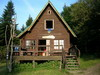

Najbliższe przystanki PKS znajdują się w: Kasince Małej, Lubniu, Mszanie Dolnej, Naprawie (przy "Zakopiance"), Rabce, Tenczynie i Zarytem. Najbliższa stacja kolejowa to Chabówka. Najłatwiej dojechać w okolice naszego schroniska autobusem lub mikrobusem z Krakowa do Mszany Dolnej lub do Rabki. Z Mszany Dolnej na Luboń Wielki prowadzi szlak czerwony (ok. 2 godz.), a z Rabki - zielony (ok. 2 ;godz.) Można też podjechać bliżej, mikrobusem kursującym na trasie Mszana Dolna - Zaryte - Rabka. W dni powszednie mikrobusy te kursują co kwadrans, w soboty - co pół godziny, a w niedzielę - raz na godzinę. W ten sposób można dotrzeć na początek szlaków prowadzących na Luboń od strony Rabki (zielony, niebieski, żółty). Bardzo łatwo można też dostać się na szlak niebieski wiodący do nas od strony "Zakopianki". Wystarczy wysiąść na przystanku Luboń Mały. Z kolei na Przełęcz Glisne najprościej dojść z Mszany Dolnej (szlakiem czerwonym, lub drogą) albo dojechać taksówką (15 zł za kurs). Natomiast mikrobusy kursują tam tylko w dni powszednie, a ostatni odjeżdża z Mszany o godz. 16.00. Aby ułatwić dojście na Luboń Wielki w warunkach zimowych, regularnie przecieramy zielony szlak z Rabki Zarytego. Dbamy też o drożność szlaku z Przełęczy Glisne.
Hala Krupowa ok. 8 godz.
 Kudłacze ok. 8 godz.
Maciejowa ok. 4 godz.
Stare Wierchy ok. 5,5 godz.
Turbacz ok. 8 godz.